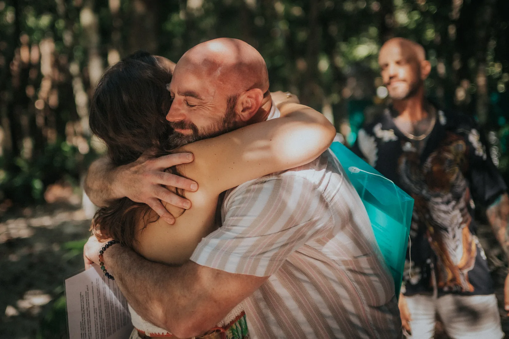

See the programming
Weeks 1–4. Recognize the conditioning running your life, meet your shadow and inner child, prepare the body — nervous system, breath, and vitality — and come to understand the medicines before you ever sit with them.
The Nine-Week Journey
A guided path from unconscious conditioning to conscious, aligned living — awareness, deep healing, sacred plant medicine, and integration.
Why This Journey
From our first breath we are told what is good and bad, how to act, how to appease — imprinted by family, society, media, school, and religion until we live on autopilot, run by beliefs we never chose.
Over nine weeks, the Liberation Program shines a light on that conditioning so you can see it, heal it, and release it. Your thoughts, emotions, and beliefs shape your reality — when you let go of the limiting ones and replace them with excitement, fulfillment, and joy, you take back control of your life and begin to create it consciously.
How the Journey Unfolds
Medicine is not the transformation. Medicine reveals the path — integration is how we walk it.
Weeks 1–4. Recognize the conditioning running your life, meet your shadow and inner child, prepare the body — nervous system, breath, and vitality — and come to understand the medicines before you ever sit with them.
Week 5. One week together in person — the ceremony itself, approached with reverence and safety, held in a sacred container with four weeks of preparation behind you.
Weeks 6–9. Come home held and supported, rewire the mind, transform your relationships, and step into an aligned life of purpose, presence, and service.
The Curriculum
Four weeks of preparation, one week together in person, then four weeks of integration. Each week builds on the last.
See the conditioning inherited from family, society, media, school, and peers — and step out of living on autopilot.
Movement I · PreparationMeet the triggers, trauma patterns, shame, guilt, and limiting beliefs you've carried — and begin the work of forgiveness and release.
Movement I · PreparationRegulate the nervous system, breathe, move, and lighten the toxic load — because healing is not only emotional, it is physical.
Movement I · PreparationBufo, Kambo, Psilocybin, and Rapé — sacred tools, never shortcuts. Origins, preparation, ceremony, safety, and reverence, so you arrive ready.
Movement I · PreparationThe one week we spend together in person — ceremony, held in a sacred container, with the preparation of the first four weeks behind you.
Movement II · The RetreatThe ceremony opens the door; integration is walking through it. Return held and supported as you adapt back into everyday life.
Movement III · IntegrationUsing neuroplasticity, replace old programming with the beliefs, identity, and daily practices of who you are becoming.
Movement III · IntegrationEvery relationship reflects the one you have with yourself. Communication, boundaries, attachment, forgiveness, and vulnerability.
Movement III · IntegrationHealing is the foundation, not the destination. Step into an aligned life of values, service, presence, and legacy.
Movement III · IntegrationWhat's Included
A complete container — teaching, preparation, ceremony, and integration — held with safety and reverence from beginning to end.

The Tiger Soul PathOur Philosophy
We cannot eliminate every toxin, stressor, or challenge. But every conscious choice reduces the burden and creates more energy for healing, growth, and purpose.
Transformation is not a single breakthrough. It is repetition — the daily thoughts, choices, and actions that determine what becomes permanent. The medicine reveals what is possible; you decide who you become.
Begin Your Liberation
Apply for an upcoming cohort — every application is read personally, and we'll speak with you before you begin. Your safety and readiness are honored every step of the way.
hello@tigersoulretreats.com · tigersoulretreats.com · @tigersoulretreats